掌機 - Miyoo Flip - 拆機(2025/03)
感謝謝工、小凱寄送機器給司徒
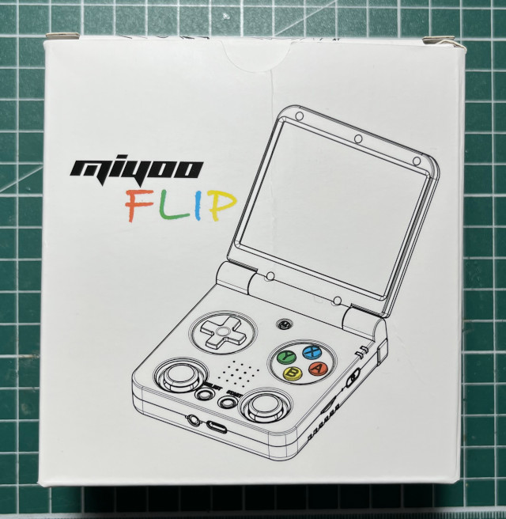
保護包
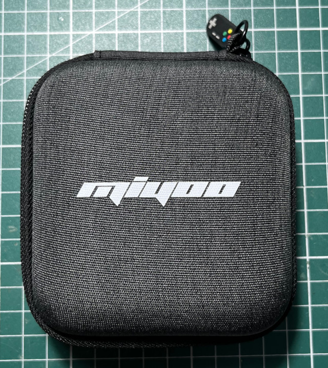
相較於舊版，新版機器在模具方面，改進蠻多的，最明顯就是LR按鍵和類比搖桿，轉軸也在新版中做增強改進
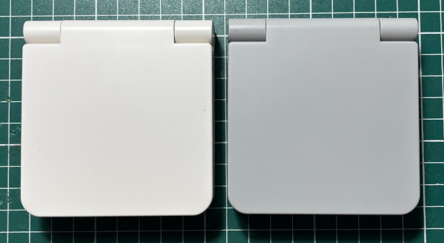
白色是舊版，灰色是司徒拿到的新版機器
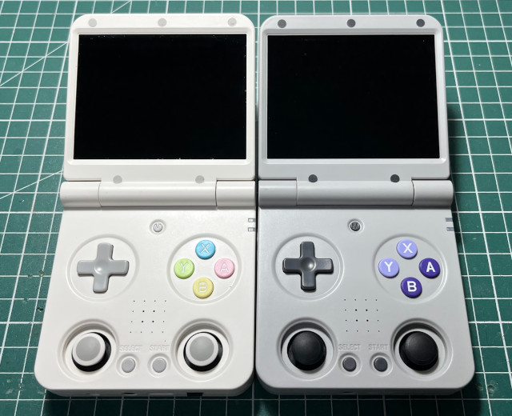
正面
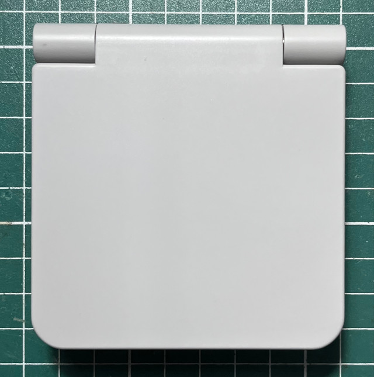
下邊
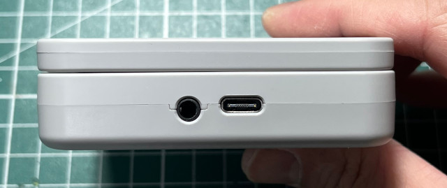
側邊
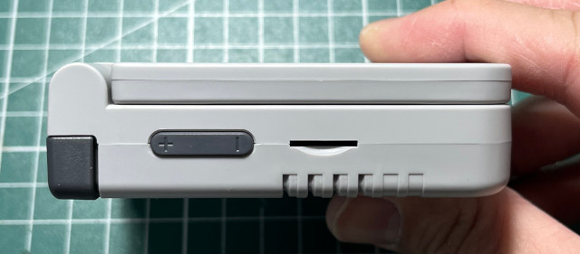
上邊
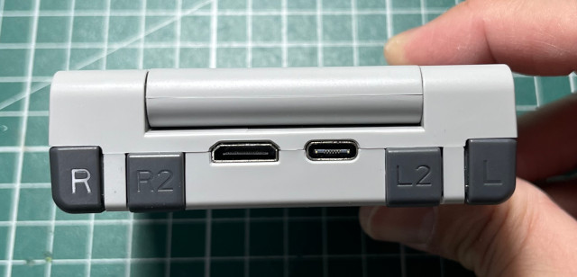
側邊
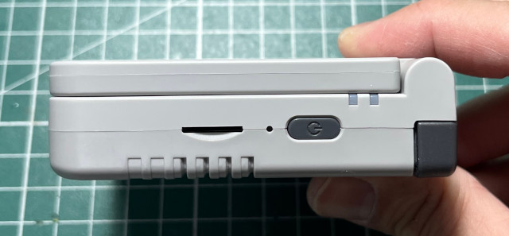
背面
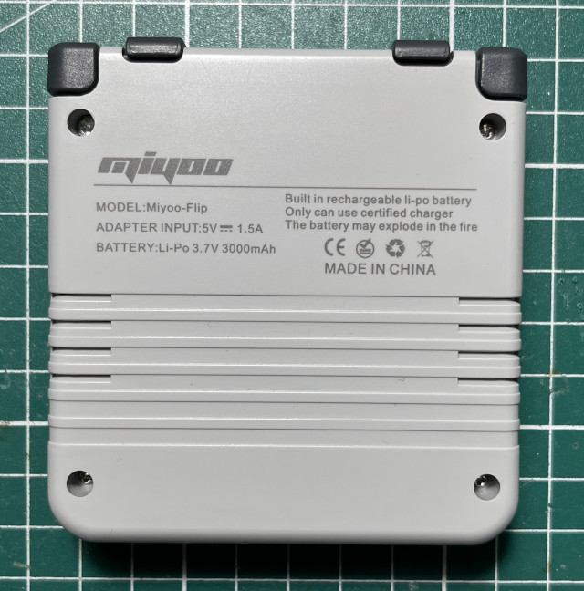
3.7V 3000mA
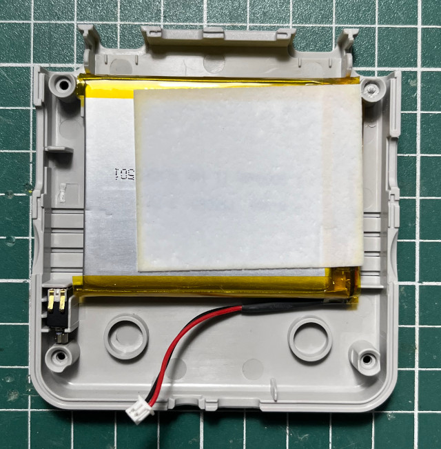
PCB
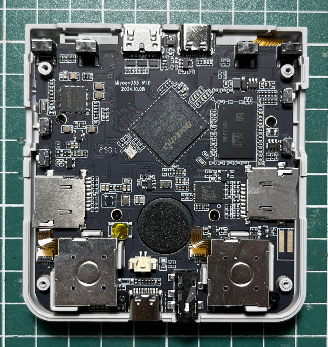
類比搖桿
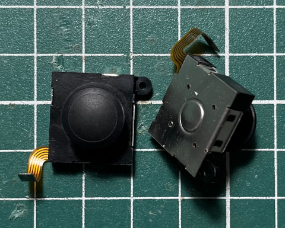
RK817、RK3566、K4F8E304HBMGCJ、F50L1G41LB-104
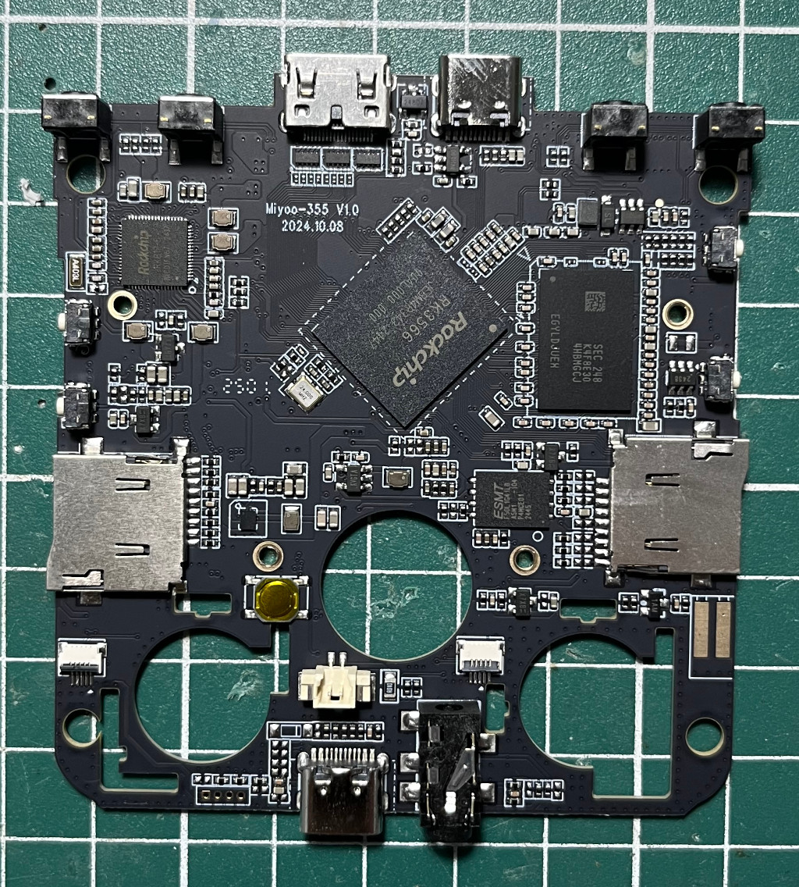
HYM8563(LCD座下方)、FT61FC4F(右下角)
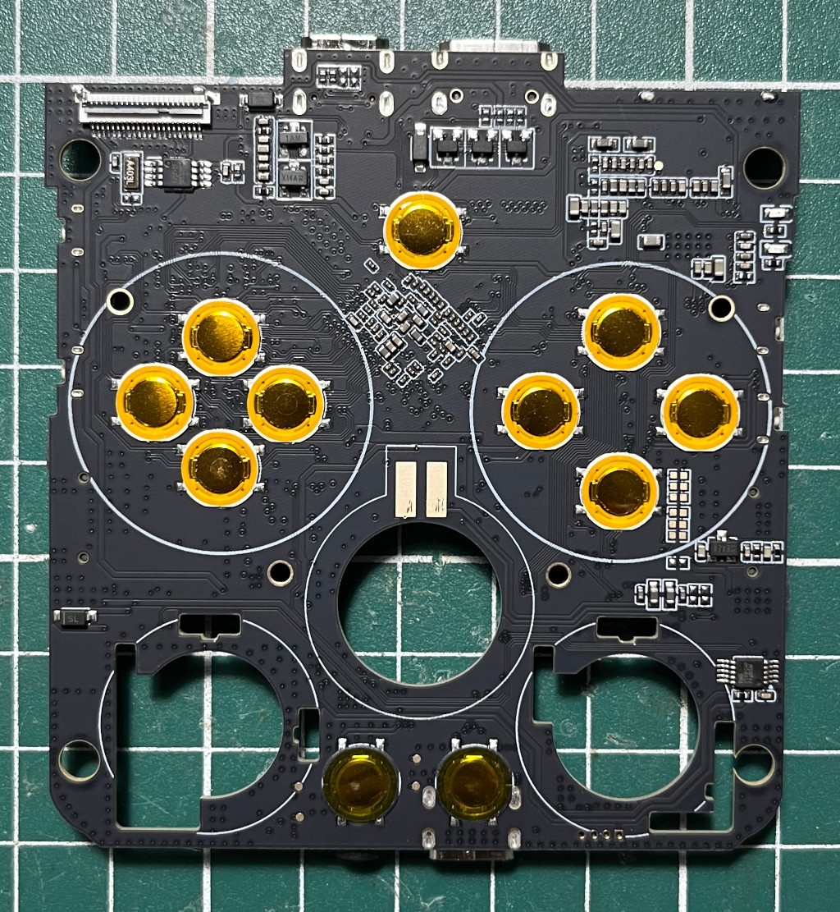
按鍵、導電膠
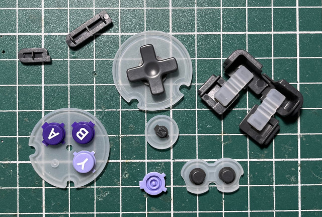
由於是新機器，司徒就沒有繼續拆屏幕，WiFi、BT模組(RTL8733BU)是放在屏幕下方
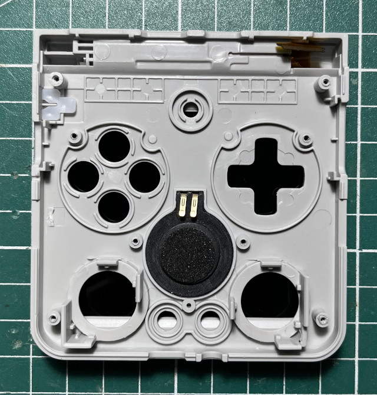